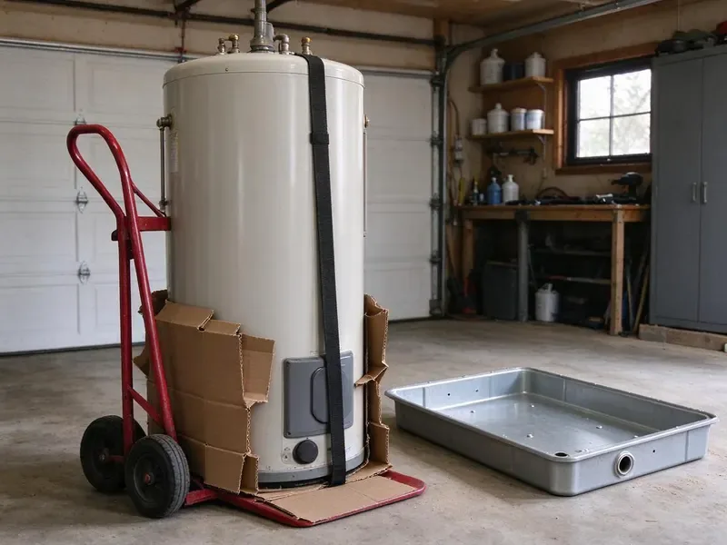

Sewage Ejector Pump Installation in Lake Oswego, OR
JFL Plumbing focuses on sewage ejector pump installation throughout Lake Oswego, OR, ensuring your below-grade plumbing operates efficiently and reliably.
- Experienced Plumbers
- Sealed, Vented Pits
- Warrantied Work
- Honest Pricing

Professional Sewage Ejector Pump Installation in Lake Oswego, OR.
Call now for an upfront quote on ejector pump installation, including basin, venting, check valve and alarm.
Expert Sewage Ejector Pump Installation in Lake Oswego, OR
At JFL Plumbing, we understand the challenges Lake Oswego homeowners face with below-grade plumbing. Our expert technicians provide careful sewage ejector pump installation, so your basement bathrooms or laundry rooms work flawlessly and messy backups are prevented.
Our expertise includes:
- Proper sizing and wiring for new pumps.
- Solids-handling ejector and grinder pump sizing and installation
- Check valves, full-port shutoffs and high water alarms included

Additional Plumbing Installation Services in Lake Oswego, OR
We install water heaters, pumps, lines, and fixtures across Lake Oswego, OR with precision workmanship that meets every local code.


Customers
Why Choose JFL Plumbing for Sewage Ejector Pump Installation in Lake Oswego, OR?
We size every pump for the job instead of using a one-size option. Correct sizing means fewer cycles, less wear and a system that holds up.
- Alarm Protection, High water alarms warn you before a failure causes a backup.
- System Sizing, Our experts accurately size pumps and basins to meet your home's wastewater volume, preventing overload or inefficiency.
- Right Pump, We match the pump to your fixtures, solids handling needs and lift height.
Citywide Coverage
From historic districts to the newest developments, our technicians are familiar with the varied housing stock in Lake Oswego and can efficiently install a sewage ejector pump tailored to your home's layout.
Experienced Team
Each technician at JFL Plumbing is well versed in the complexities of below-grade plumbing, from excavation and piping to electrical connections, delivering expert service for your Lake Oswego home.
Safety-First Approach
Safety and code compliance matter most on every sewage ejector pump installation we perform. We follow all local Lake Oswego and Oregon plumbing codes to prevent hazards and ensure proper system function.
Trusted Certified Lake Oswego Plumbing Services Professionals
At JFL Plumbing, we take pride in providing licensed, certified plumbing services throughout Lake Oswego, OR. Backed by recognized industry credentials, our experienced plumbers combine technical skill with genuine customer care. Whether it is repair, installation, or maintenance, we follow strict safety and quality standards to deliver long-lasting results you can trust.
Call Us Now PHCC Plumbing Contractor Recognition
PHCC Plumbing Contractor Recognition Better Business Bureau (BBB) Accreditation
Better Business Bureau (BBB) Accreditation Angi Certified Pro
Angi Certified Pro ISO 9001 Quality Management Certification
ISO 9001 Quality Management CertificationDurable Sewage Ejector Pump Installation Services in Lake Oswego, OR
Ejector Pump Replacement in Lake Oswego
Ejector pumps usually last about 7 to 10 years, depending on use and what goes down the drains. Signs of trouble include constant running, frequent cycling, odors and slow fixture drainage. We remove the failed pump, inspect the basin, check valve and float, and install a new pump from brands like Zoeller, Liberty Pumps or Wayne. The system is tested with water before we finish.

Upflush and Macerating Toilet Systems in Lake Oswego
Macerating systems like Saniflo let you add a toilet and sink without breaking the concrete floor. The unit sits behind the toilet and pumps waste through small-diameter pipe up to the drain line. They work well for small basement bathrooms, laundry rooms and guest suites. We explain their limits, including what should never be flushed, so the system stays reliable.
Duplex and Commercial Ejector Systems in Lake Oswego, OR
Commercial buildings, multi-unit properties and homes with heavy below-grade use often need duplex systems with two pumps and an alternating control panel. If one pump fails, the other keeps working while an alarm notifies staff. We size the basin and pumps for peak flow and install controls to code. Maintenance schedules are provided to keep both pumps in good condition.
Zoeller Ejector Pump Installation in Lake Oswego, OR
When you need a reliable Zoeller ejector pump installed in Lake Oswego, OR, JFL Plumbing is your go-to plumbing expert. Zoeller pumps are known for their durability and efficiency, making them a popular choice for homeowners and businesses alike. Our team handles the complete installation of Zoeller sewage ejector pumps, including pit setup, discharge piping and electrical connections. We make sure your Zoeller pump operates quietly and effectively, giving you peace of mind for your below-grade plumbing.
Emergency Sewage Ejector Pump Replacement in Lake Oswego
A failing sewage ejector pump can lead to immediate and messy problems in your Lake Oswego home or business. JFL Plumbing offers emergency replacement for sewage ejector pumps. If your current pump has completely failed, is overflowing or shows severe signs of malfunction, our fast response team can diagnose the issue and install a new unit swiftly and professionally. We prioritize emergencies to restore your plumbing as soon as possible, minimizing damage and inconvenience.
Zoeller Sewage Ejector Pump Installation in Lake Oswego
As a trusted brand in the industry, Zoeller pumps are known for their reliability and long lifespan. JFL Plumbing installs a full range of Zoeller sewage ejector pumps in Lake Oswego, from residential models to more powerful commercial units. Our technicians are very familiar with Zoeller's specifications, ensuring correct sizing, proper wiring and a well-planned discharge line for efficiency and longevity. Investing in a quality brand like Zoeller, installed by professionals, means fewer worries about wastewater removal.
Grinder Pump Installation in Lake Oswego
Where wastewater contains tougher solids, a grinder pump installation in Lake Oswego might be necessary. Unlike standard ejector pumps, grinder pumps macerate waste into a fine slurry before pumping it to the sewer line. This is often required for certain commercial applications or residential setups with specific waste disposal needs. JFL Plumbing can help you determine if a grinder pump is the right solution, handling the whole installation from start to finish, including the specialized electrical and discharge piping.

Liberty Pumps Installation in Lake Oswego
JFL Plumbing installs Liberty sewage ejector pumps in Lake Oswego. Liberty Pumps is a trusted name in the industry, known for robust construction and reliable performance. We offer various models to suit different needs, from residential basement applications to light commercial use. Our technicians are experienced with Liberty's product line, so your new pump is installed to manufacturer specifications for efficiency and a long service life. We can help you choose the best Liberty model for your wastewater volume and lift requirements.
Sewage Ejector Pump Installation Near Me in Lake Oswego, OR
Our commitment to the Lake Oswego community means we understand the local plumbing infrastructure and requirements for below-grade installations. Trust JFL Plumbing for reliable, code-compliant sewage ejector pump solutions close to home.
Our local plumbers install and service ejector systems in Lake Oswego and understand local code and inspection requirements. That experience helps us plan new installs efficiently. You get a reliable system and a team that can help with future service.
JFL Plumbing at a Glance
- Licensed and insured plumbers serving Lake Oswego, OR
- 24/7 emergency service with same-day scheduling
- Upfront, flat-rate pricing before work begins
- 4.8-star rated by 657+ Oregon customers
Lake Oswego Map
Lake Oswego Information
- Population
- 39,924
- Area codes
- Local
- Service area
- Lake Oswego and communities within 40 miles
- Nearby
- Tigard, Beaverton, Oregon City, Portland
In Lake Oswego, OR, homes with basements or lower levels with plumbing need a dependable sewage ejector pump to prevent messy backups and keep wastewater moving, especially when heavy rain raises groundwater levels.
Expert Services
Trust our professionals for reliable JFL Plumbing solutions in Lake Oswego, OR.
Our Specialized Plumbing Services in Lake Oswego, OR
At JFL Plumbing, we provide a complete range of plumbing services across Lake Oswego, OR. From leak detection to full system installations, our team ensures fast, precise, and affordable service for both residential and commercial properties. Explore our core services below:


How Our Sewage Ejector Pump Installation Process Works in Lake Oswego, OR
Our sewage ejector pump installation process is designed for efficiency and minimal disruption to your Lake Oswego home.
Request a Quote
Call (971) 333-7694 to describe your fixtures and layout or report a pump problem. We schedule a visit and give you a written quote.
Install the System
We install the basin, pump, check valve, shutoff and venting, then connect each fixture. Electrical and alarm wiring are coordinated as needed.
Test and Inspect
We run water through the system to confirm proper cycling and discharge. Inspection is scheduled when a permit is needed.
Frequently Asked Questions About Sewage Ejector Pump Installation in Lake Oswego
The cost of sewage ejector pump installation in Lake Oswego, OR typically ranges from $2,500 to $6,000, depending on pump type, basin size, excavation needs and whether new electrical circuits are required. This estimate includes the pump unit, labor and materials. We provide a detailed, upfront quote after an on-site assessment.
We recommend having your sewage ejector pump inspected annually, especially if it is in a high-use area. Regular inspections can catch potential issues early, extend the life of your pump and prevent unexpected failures and costly backups. This is especially important for older units.
Avoid flushing wipes, paper towels, feminine products, grease and cat litter. These items clog pumps and cause early failure.
Common signs that you might need a new sewage ejector pump include the pump running constantly, not turning on at all, making unusual grinding or loud noises, or foul odors or sewage backing up into your basement fixtures. These symptoms point to a failing unit that requires immediate attention.
A sewage ejector pump is designed to handle solid waste and wastewater from plumbing fixtures below the main sewer line, like toilets and sinks, discharging it into the sewer system. A sump pump, in contrast, removes groundwater from a basement or crawl space, only handling clear water to prevent flooding. They serve different purposes for different types of water.
Regular maintenance for a sewage ejector pump involves periodically checking the basin for debris, confirming the check valve works correctly and testing the float switch. It is also wise to avoid flushing non-biodegradable items. JFL Plumbing offers maintenance services to keep your pump running efficiently and prevent surprise breakdowns.
Constant running, a sounding alarm, sewage odors, gurgling drains and slow drainage are common signs. Act fast to avoid a backup.
Manufacturer warranties typically range from 1 to 5 years depending on the model. We also warranty our installation labor.
What People Are Saying About Our Plumbing Experts?

Daniel K.
A pipe burst at 11 pm and they actually answered. The plumber showed up within the hour, shut everything down, and had us back to normal the next morning. Could not ask for more.
Emergency Plumbing · Tigard, OR
Emily R.
I called JFL Plumbing for plumbing repair, and the technician was fast, polite, and thorough. They explained the problem clearly and fixed it the same day. I will definitely hire them again. Highly recommended!
Plumbing Repair · Tigard, OR
James P.
Our commercial plumbing system had a leak under the sink, and JFL Plumbing handled it professionally. The plumbers arrived quickly and restored everything without disruption to our customers.
Commercial Plumbing · Lake Oswego, OR
Laura S.
I scheduled a water heater replacement, and the team made the process smooth and affordable. The new unit works perfectly, and they cleaned up after completing the job.
Water Heater Replacement · Lake Oswego, ORSofia M.
Two new toilets installed in one visit, no mess left behind, and the tech even adjusted a faucet he noticed was dripping. Fair pricing and really friendly.
Toilet Installation · Aloha, OR
Patricia H.
We had a slab leak that two other companies could not find. JFL Plumbing located it in under an hour, explained our options, and the price matched the quote to the dollar.
Slab Leak Repair · Portland, OR